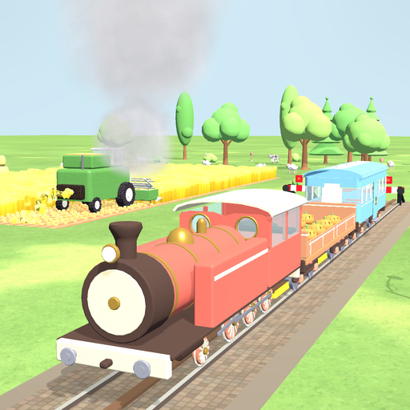
Train Puzzle · flip switches, couple wagons, make up trains
Welcome to the coziest little railway yard! Drive a tiny yellow shunting engine, flip the switches and couple up the wagons in just the right order. When the train is ready, it rolls to the signal by itself — green light, a toot of the horn and off it goes.
Get it on Google PlayFree to try · first 12 levels free · Android
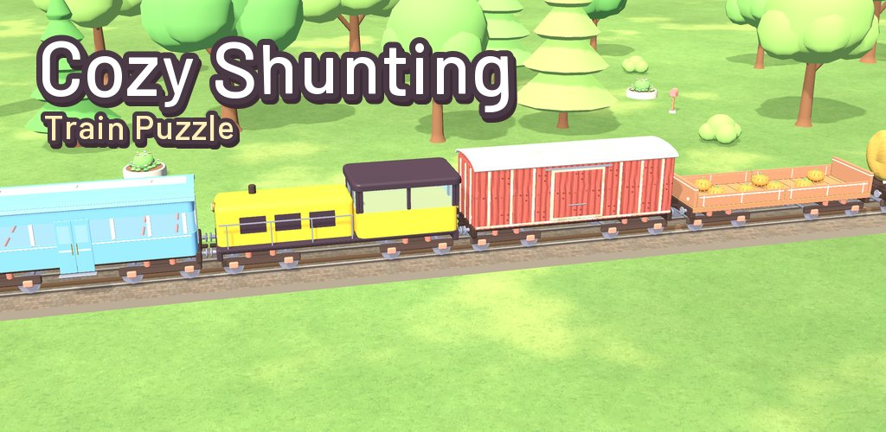
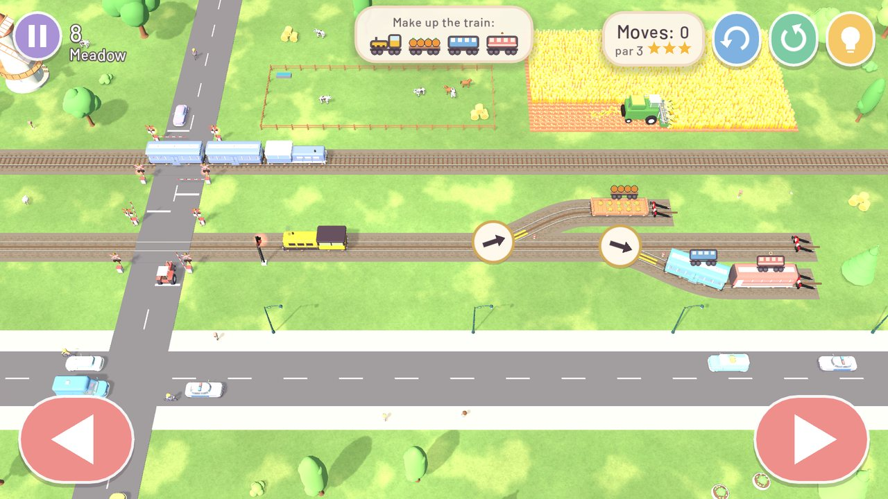
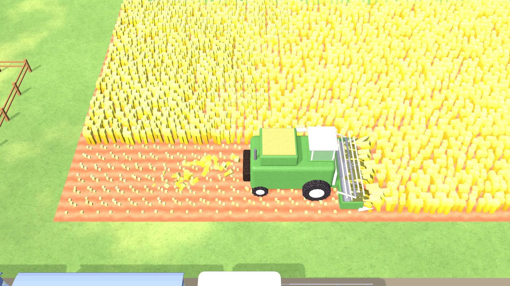
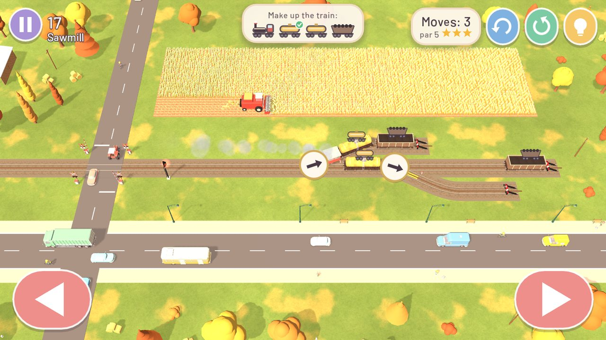
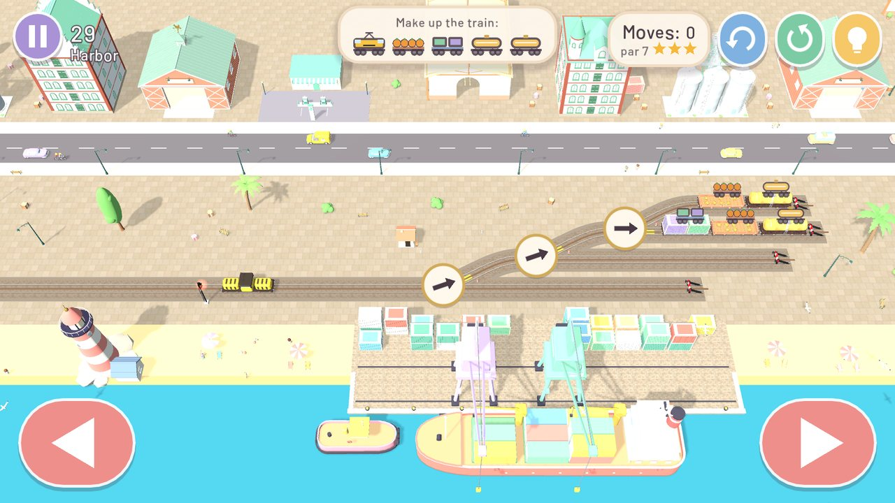
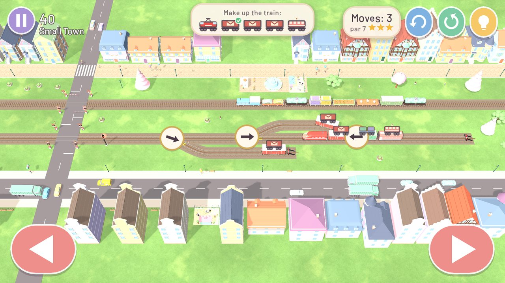
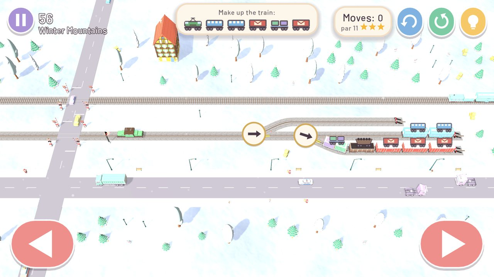
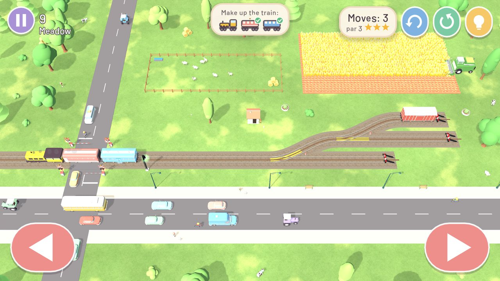
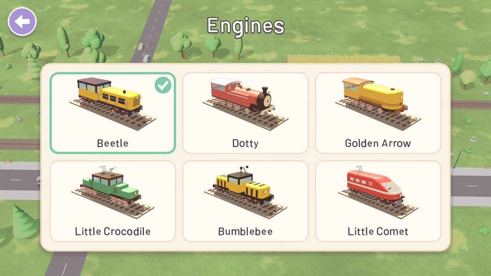
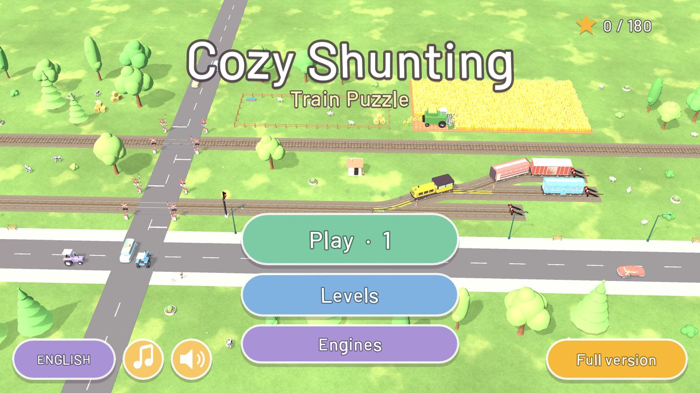
No ads, no subscriptions, no energy and no timers. The first 12 levels are free. One small purchase unlocks the full game — 48 more levels in 4 lands and 5 more engines.
No account needed. Languages: English, Polish, German, Czech, French, Spanish, Portuguese, Italian and Japanese.